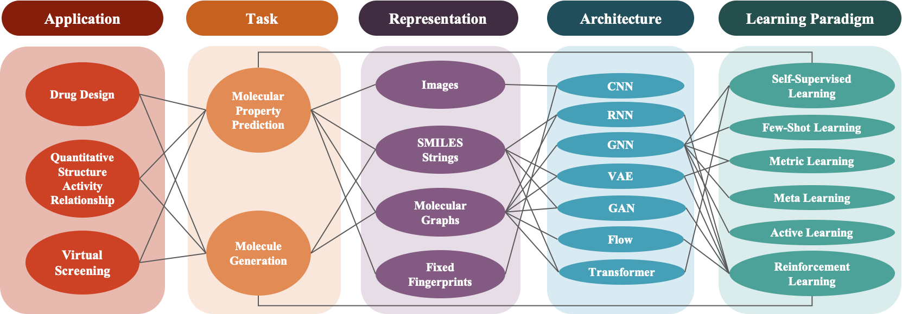

|
Jianyuan Deng
I am a 3rd-year PhD student at the Department of Biomedical Informatics, Stony Brook University.
I received my M.Phil. degree from School of Pharmacy at The Chinese University of Hong Kong in 2016. Before that, I obtained my B.Sc. degree in Pharmaceutical Sciences from Sun Yat-Sen University in 2014.
Email /
CV /
Google Scholar /
Github
|
|
|
Research
My research interests broadly include informatics, machine learning, drug discovery, and oral drug absorption. Currently, my work primarily focuses on molecular property prediction & molecule generation with deep learning.
|
|

|
Artificial Intelligence in Drug Discovery: Applications and Techniques
Jianyuan Deng, Zhibo Yang, Dimitris Samaras, Fusheng Wang
github link / manuscript coming out soon.
We released a Github repository (First-Release Date: 2021-06-06) for a collection of related papers in AI-driven Drug Discovery.
|
|
|
A Large-Scale Observational Study on the Temporal Trends and Risk Factors of Opioid Overdose: Real-World Evidence for Better Opioids
Jianyuan Deng, Wei Hou, Xinyu Dong, Janos Hajagos, Mary Saltz, Joel Saltz, Fusheng Wang
Drugs-Real World Outcomes, 2021
We conduct a retrospective cross-sectional study on opioid overdose by mining a large-scale electronic health records database and also explore its association with opioids' properties.
|
|
|
Identifying Risk of Opioid Use Disorder for Patients Taking Opioid Medications with Deep Learning
Xinyu Dong, Jianyuan Deng, Sina Rashidian, Kayley Abell-Hart, Wei Hou, Richard N Rosenthal, Mary Saltz, Joel Saltz, Fusheng Wang
Journal of The AMIA, 2021
We present an LSTM model for predicting opioid use disorder among patients taking opioid medications based on their electronic health records.
|
|
|
Predicting Opioid Overdose Risk of Patients with Opioid Prescriptions using Electronic Health Records based on Temporal Deep Learning
Xinyu Dong, Jianyuan Deng, Wei Hou, Sina Rashidian, Richard N Rosenthal, Mary Saltz, Joel Saltz, Fusheng Wang
Journal of Biomedical Informatics, 2021
We present an LSTM model for predicting opioid overdose among patients with opioid prescriptions based on their electronic health records.
|
|
|
Towards Better Opioid Antagonists Using Deep Reinforcement Learning
Jianyuan Deng*, Zhibo Yang*, Yao Li, Dimitris Samaras, Fusheng Wang
arXiv, 2020
We develop a deep reinforcement learning framework to discover potential lead compounds as better opioid antagonists with enhanced brain retention ability.
|
|
|
An Informatics-based Approach to Identify Key Pharmacological Components in Drug-Drug Interactions
Jianyuan Deng, Fusheng Wang
AMIA Informatics Summit, 2020
We propose an informatics approach to identify the most influential carriers, transporters, enzymes and targets underlying drug-drug interactions.
|
|
|
In Silico Drug Absorption Tract: An Agent-based Biomimetic Model for Human Oral Drug Absorption
Jianyuan Deng, Anika Jhandey, Xiao Zhu, Zhibo Yang, Kin Fu Patrick Yik, Zhong Zuo, Tai Ning Lam
PLoS One, 2018
video
We present an in silico drug absorption tract, ISDAT, to simulate human oral drug absorption of clonazepam and midazolam.
|
|
|
HiQ: Robust and Fast Decoding of High-Capacity QR Codes
Jianyuan Deng, Huanle Xu, Jianyuan Deng, Chen Change Loy and Wing Cheong Lau
IEEE Transactions on Image Processing, 2018
code / dataset / video
We put forth and implement a framework for high-capacity color QR codes equipped with our methods, called HiQ. A fast color QR code decoding algorithm is also presented.
|
|
|
A Review of Food–Drug Interactions on Oral Drug Absorption
Jianyuan Deng, Xiao Zhu, Zongmeng Chen, Chun Ho Fan, Him Shek Kwan, Chi Ho Wong, Ka Yi Shek, Zhong Zuo, Tai Ning Lam
Drugs, 2017
We conduct a comprehensive review on food effect and examine how it affects oral absorption extent and rate based on the Biopharmaceutics Drug Disposition Classification System.
|
|
|
An Agent-based Approach to Dynamically Represent the Pharmacokinetic Properties of Baicalein
Xiao Zhu, Jianyuan Deng, Zhong Zuo, Tai Ning Lam
The AAPS Journal, 2016
We present an agent-based model to represent baicalein's pharmacokinetic properties based on a bi-directional transport study in the Caco-2 cell monolayer.
|
|
{kind=link}